物理兴趣小组为了测量金属丝的电阻率，除了待测金属丝、刻度尺、螺旋测微器、开关和导线之外，还备有下列器材：已知待测电阻约为30Ω．
A.电压表V1（量程0~3V，内阻约3kΩ）
B.电压表V2（量程0~15V，内阻约15kΩ）C.电流表A1（量程0~100mA，内阻约5Ω）
D.电流表A2（量程0~0.6A，内阻约0.1Ω）E.多用电表
F.滑动变阻器R1（阻值0~10Ω，额定电流2A）G.滑动变阻器R2（阻值0~2kΩ，额定电流0.5A）
H.电源E（输出电压约4V，内阻可忽略）
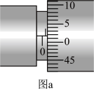


作为精密测量工具，千分尺（又称螺旋测微器）和游标卡尺被广泛用于精密加工之中，并被业内人所熟知着，然而测量值本就不是个绝对值，只有正确使用了测量工具才能无穷大的去接近他的真身，这两种测量工具，你们都会用吗？
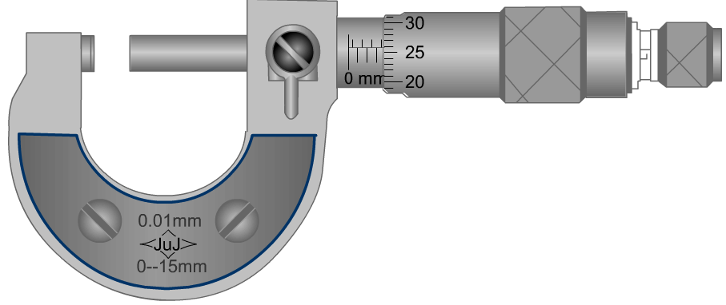
（1）把金属丝接入电路中，用电压表测金属丝两端的电压，用电流表测金属丝的电流利用
（2）用刻度尺测得金属丝的长度
（3）由
（1）电流表和电压表的接法
常见的伏安法测电阻有两种接法，即电流表内接法和外接法
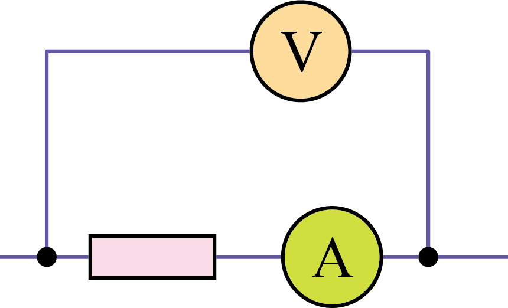
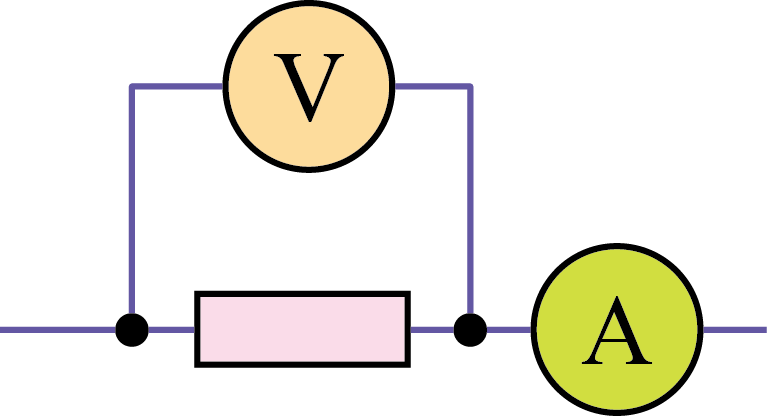
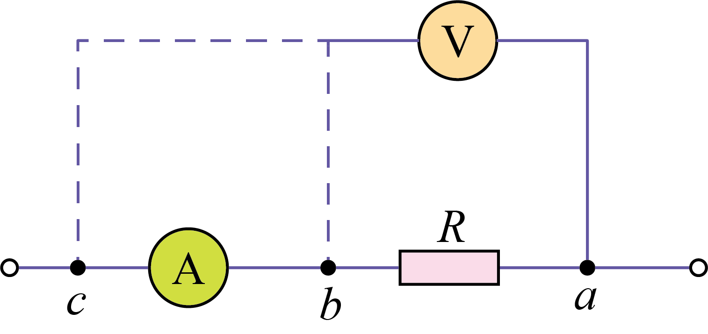
（2）滑动变阻器的接法
变阻器接入电路的特点
连接变阻器的导线分别接金属杆的一端和电阻线圈一端的接线柱（图中电阻器
连接变阻器导线分别接金属杆一端和电阻线圈的两端接线柱，（图中变阻器
（1） 调节实验电路的电流或电压
（2）保护电路
调压范围
电路消耗
总功率
设表示被控制的负载，表示滑线变阻器的总电阻，表示控制器的输出电压，表示电源电动势，内阻不计．
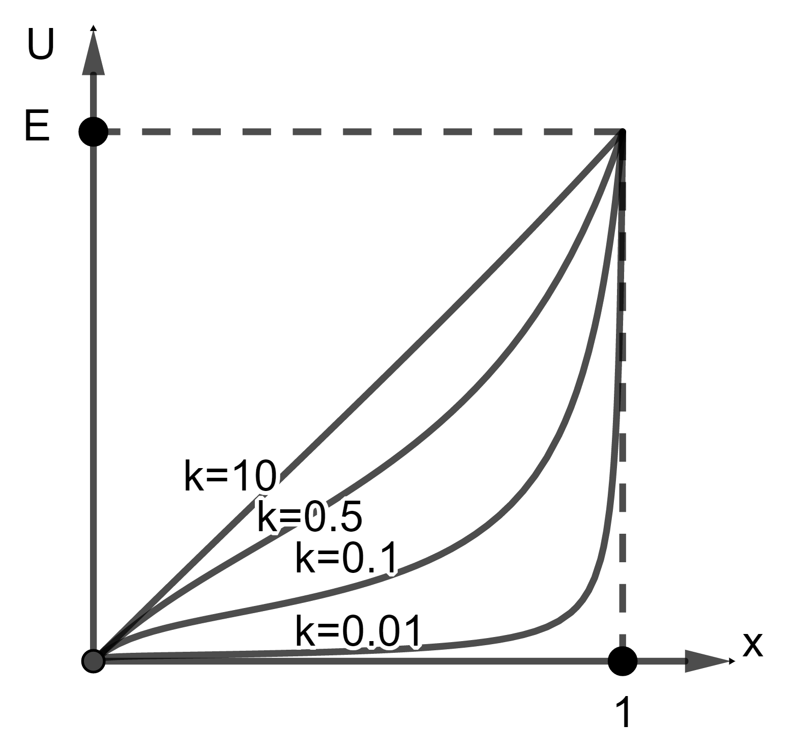
通过此图能看出值越大，即负载电阻比 大得越多，输出电压变化的线性程度越好．
设表示被控制的负载，表示滑线变阻器的总电阻，表示控制器的输出电压，表示电源电动势，内阻不计．
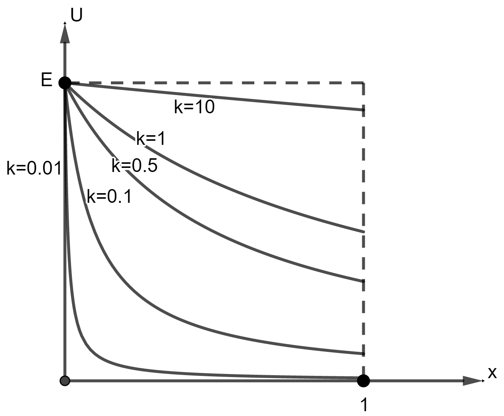
通过此图能看出值越大，即负载电阻比 大得越多，输出电压变化的线性程度越好，但调节范围小.
小结：限流式接法与分压式接法比较
两种接法比较内容
滑片在最左端，即保证滑动变阻器接入电路中的阻值最大
（1）构造：游标卡尺的主要部分是主尺
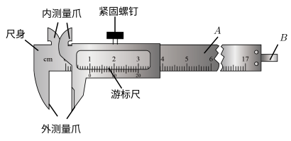
（2）用途：测量厚度、长度、深度、内径、外径．
用游标卡尺的外测量爪测量小钢球的直径、小圆管的外径、教科书的厚度等；用游标卡尺的内测量爪测量小圆管的内径、槽的宽度等．
（3）原理：游标卡尺是利用主尺的单位刻度
分度
刻度总长度
每小格与
精确度（可精确到）
（4）读数方法
第一步：看游标尺总刻度确定精确度．
第二步：读出游标尺零刻度线左侧的主尺整毫米数
第三步：找出游标尺与主尺刻度线“正对”的位置，并在游标尺上读出对齐线到零刻度线的小格数
第四步：按读数公式读出测量值．
读数公式：测量值
如图中的测量值
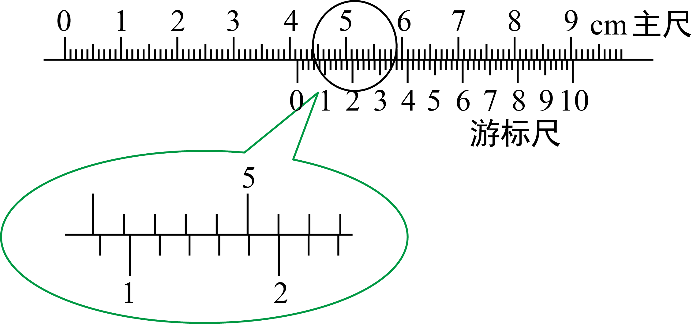
（1）构造与原理：测微螺杆每旋转一周，测微螺杆前进或后退
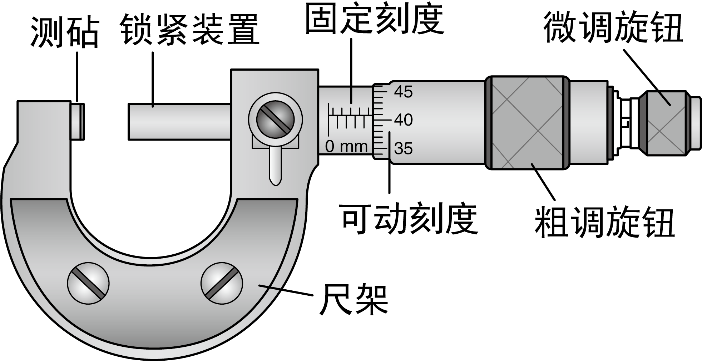
（2）读数：测量值
如图所示，固定刻度
说明：以毫米为单位时，小数点后面要有三位有效数字，特别是最后一位估读数字为零时，不能忽略．
（3）使用：用螺旋测微器测量物体的微小尺寸时，先使测微螺杆与测砧接触，可动刻度的左边缘与固定刻度的零刻度线对正；将被测物体夹在测微螺杆与测砧之间，旋转旋钮，当测微螺杆快靠近物体时，停止使用旋钮，改用微调旋钮，听到“喀喀”声时停止，然后读数．
（1）原则：由于考虑电表自身的误差，我们需要电压表和电流表的测量时偏转量尽量在量程的
（2）核心思路：估算电源电动势，所测电阻的粗略阻值，估算电流和电压的范围，以此选择电表．
（3）一般步骤：
① 根据电源电压选择电压表；
② 根据电压表的量程及待测电阻阻值大小选择电流表．
注意：电源电压可以大于电压表量程，但不能小于电表量程的
（1）定值电阻或电阻箱在电路中的作用：
① 保护电路，防止电路电流/电压过大；
② 改装电表；
（2）定值电阻的选取原则：
先判断是保护电路还是改装电表
① 保护电路：利用 算出电路总电阻，减去其余部分电阻（滑动变阻器取零）则为所需定值电阻阻值．
② 电表改装：改装电压表或电流表．
（1）用螺旋测微器在被测金属导线上三个不同位置各测一次直径，求出其平均值
（2）根据电路设计选择电路图连接实物图；
（3）用毫米刻度尺测量接入电路中的被测导线的有效长度，反复测量多次，求平均值
（4）电路经检查确认无误后，闭合开关
（5）将测得
（6）拆去实验线路，整理好实验器材．
（1）为了方便，测量直径应在导线连入电路前进行，为了准确，应该在连入电路之后在拉直的情况下测量金属丝的长度；
（2）分压式接法，开关
（3）电流不宜太大，通电时间不宜太长，以免金属丝温度升高，导致电阻在实验过程中变大．
（4）电压表、电流表读数
核心原则：分度值是1、0.1、0.01等
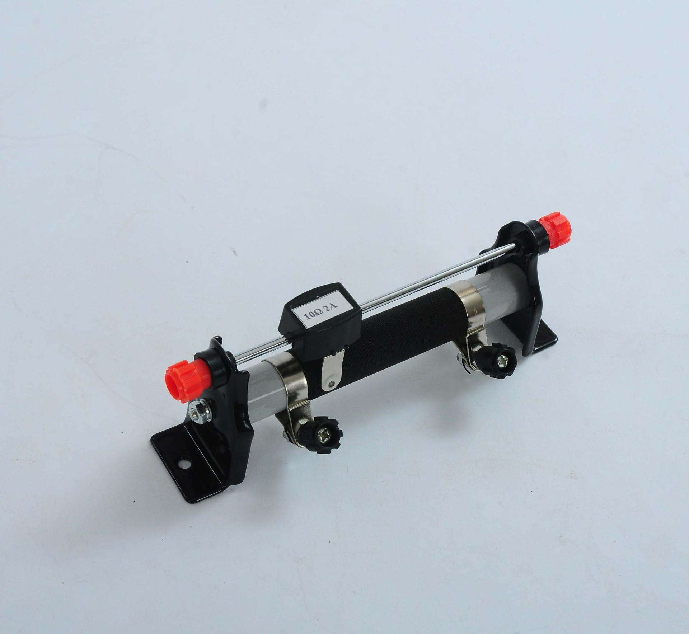
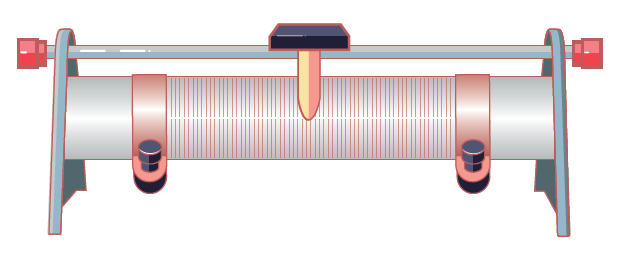
说明：误差分为系统误差与偶然误差，偶然误差来源于实验者（不可预知），系统误差来源于实验本身，偶然误差可以通过多次测量求平均值或者画图像来减小，但是不能消除.
电路设计的几种基本思想：内接外接。
如图甲、乙所示，用伏安法测电阻时，用两种方法把电压表和电流表连入电路．则下列说法中正确的是（ ）
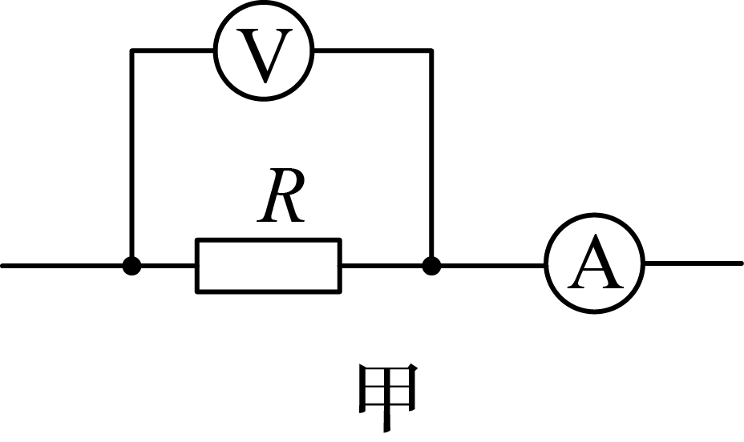
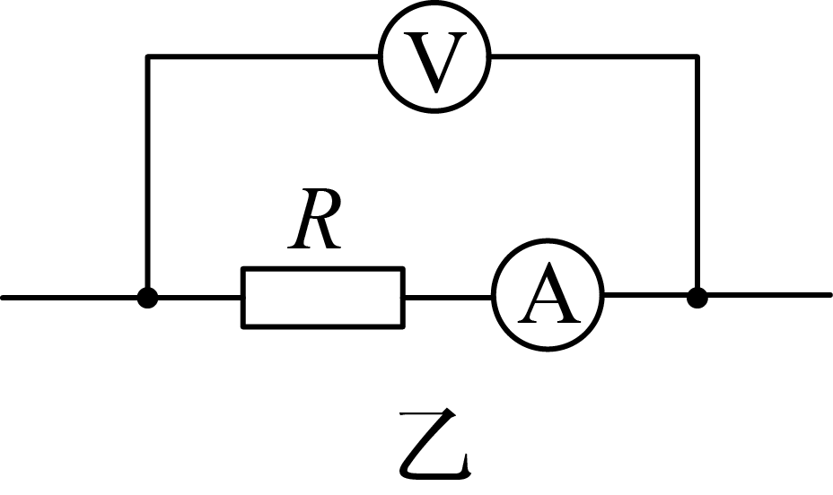
1、甲图是电流表外接，电压表所测的电压是准确的，由于电压表的 分流 作用，使得电流表测量值 偏大 ，由，所以计算的电阻值 偏小 ，即采用甲图时，电阻的测量值 小于 真实值；
2、乙图是电流表内接，电流表所测量的电流是准确的，由于电流表分压，电压表测量值 偏大 ，由，可知计算的电阻值 偏大 ，即采用乙图时，电阻的测量值 大于 真实值；
3、为了减小误差，测量小电阻时，用甲图时电压表分得的电流可以忽略不计，即为了减小实验误差，测量小电阻时宜选用 甲图 ．
电流表外接时，电压表准确电流表偏大；电流表内接时，电流表准确电压表偏大。
用伏安法测电阻，当对被测电阻的阻值一无所知而无法选择用何种接法时，可采用试触的方法。如图所示，某同学测量未知电阻
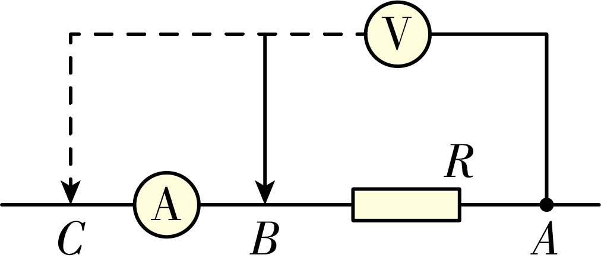
在“用伏安法测电阻”的实验中，测量电路中电表的连接方式如图甲或乙所示，把电压表读数和电流表读数的比值作为电阻的测量值，考虑到实际电表内阻对测量的影响，两种连接方式都存在系统误差．下列判断正确的是（ ）
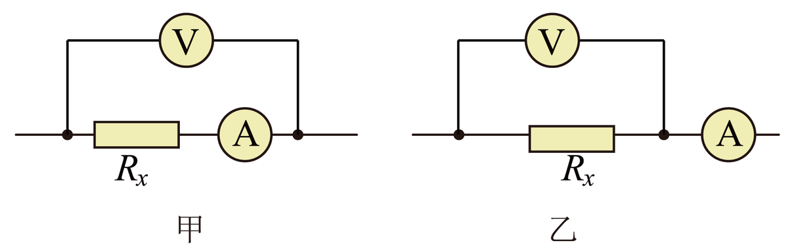
小明要用伏安法测量一个电阻的阻值，但他并不知道电阻的大概阻值，手中电表的内阻也都不是很理想，于是他分别用内接法和外接法进行了测量，得到了两组电压、电流数据：
a．2.0V，1.0mA
b．1.9V，2.0mA
请根据这两组数据回答以下问题：
这两组数据中 是外接， 是内接；
使用 （a/b）组数据测量的值比较准确，这组数得到的电阻值的测量值为 ．
对于这个实验而言， （电压表/电流表）的内阻更不理想，它的内阻约为
电路设计的几种基本思想：分压限流。
一个未知电阻Rx，阻值大约为10kΩ~20kΩ．为了较为准确的测定其电阻值，实验室中有如下器材：电压表V（量程3V、内阻约为3kΩ）电流表A（量程200μA、内阻约为100Ω）滑动变阻器R的最大阻值为200Ω电源电动势为3V开关S、导线等
滑动变阻器接入电路应采用 （填“分压式”或“限流式”）
为了尽可能减少误差，电流表应采用 （填“内接”或“外接”）
用本实验方法测出的电阻值比真实值偏 （填“大”或“小”）
1、滑动变阻器阻值远小于待测电阻阻值，则接入电路应采用 分压式 ；
2、因，则为了尽可能减少误差，电流表应采用 内接 ；
3、本实验方法由于电流表的分压作用，电压的测量值 偏大 ，测出的电阻值比真实值偏 大 ．
负载电阻的阻值
如图所示，、、、是滑动变阻器的四个接线柱，现把此变阻器接成一个分压电路向一个小灯泡供电，并要求滑片向移动时，小灯泡两端电压减小，下列说法中正确的是（ ）
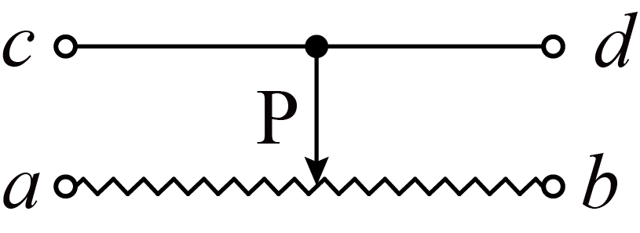
接电源正极，接电源负极，、接小灯泡两端
接电源正极，接电源负极，、接小灯泡两端
接电源正极，接电源负极，、接小灯泡两端
接电源正极，接电源负极，、接小灯泡两端
在如图
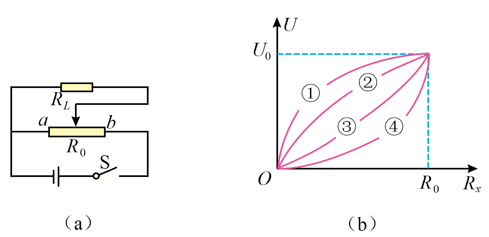
为测量“12V 5W”的小电珠在不同电压下的功率，给定了以下器材：电源（电动势为12V，内阻不计）；电流表（量程0～0.6A、0～3A，内阻约为0.2Ω）；电压表（量程0～3V、0～15V，内阻约为15kΩ）；滑动变阻器（0～20Ω，允许最大电流1A）；开关一个；导线若干。实验要求加在小电珠上的电压可从零开始调节。以下四个电路图你认为最合适的是（ ）
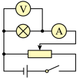
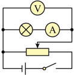
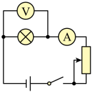
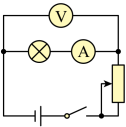
电路实验中的器材选取，实物电路图的组装。
用伏安法测量一个定值电阻的阻值，器材规格如下：
（1）待测电阻
（2）直流毫安表（量程
（3）直流电压表（量程
（4）直流电源（输出电压
（5）滑动变阻器（阻值范围
（6）电键一个，导线若干
根据器材的规格和实验要求，将设计的电路图画在方框中，并补全实物连接图．
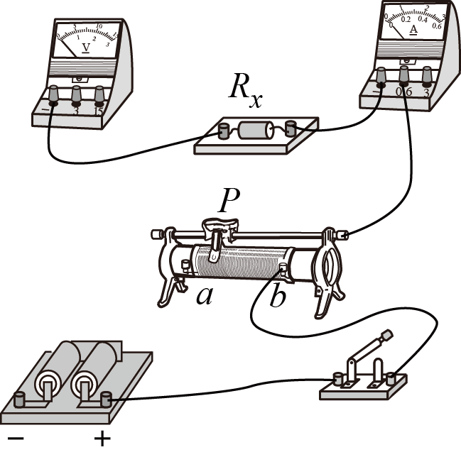
1、因为滑动变阻器的总电阻较小，采用 限流式 接法，移动滑动变阻器时，电流、电压变化不明显，测量误差较大，所以滑动变阻器采用 分压式 接法．
2、因为待测电阻远小于电压表内阻，与电流表内阻相当，属于小电阻，根据“小外偏小”，所以电流表采用 外接法 ．
如图所示：
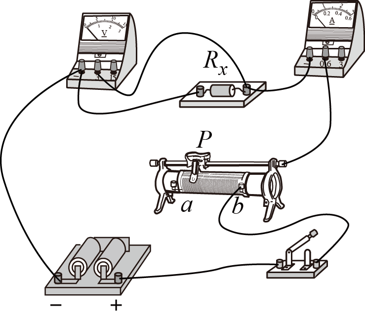
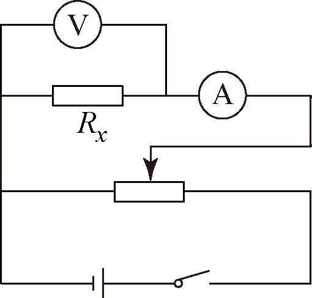
“大内偏大，小外偏小”。
某同学用游标卡尺测量一个圆柱形导体的长度，游标尺上有10等分刻度，测量示数如图甲所示；用螺旋测微器测量该导体的直径，测量示数如图乙所示。下列选项中正确表示读数结果的是（ ）
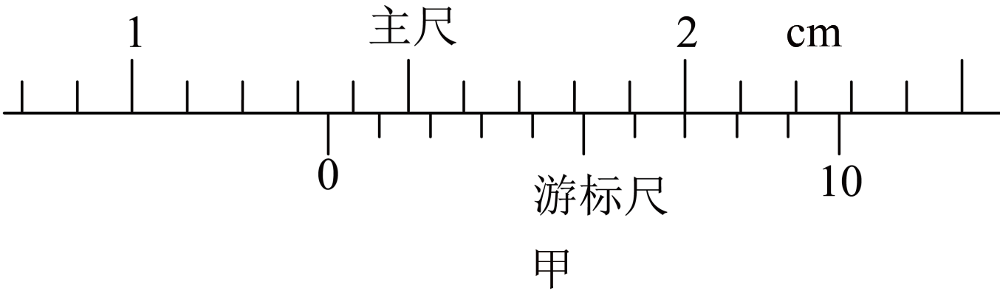
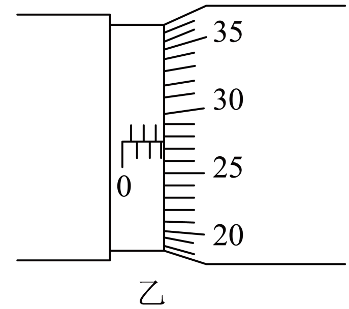
在“测定金属丝的电阻率”实验中，用螺旋测微器测量金属丝直径时其刻度的位置如图所示。
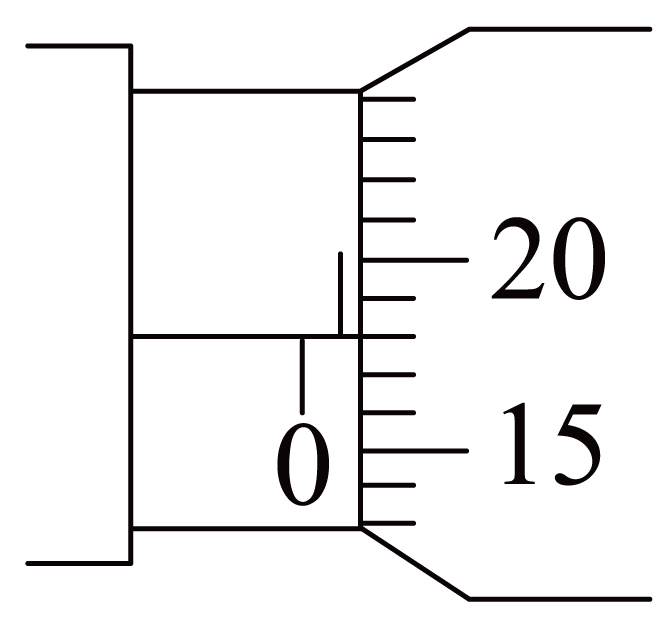
（1）从图中可读出金属丝的直径为 mm。
（2）在用伏安法测定金属丝的电阻R时（金属丝的电阻约为6
A.直流电源E；电动势约4.5V，内阻很小；
B.电流表A1：量程0～0.6A，内阻约为0.5
C.电流表A2：量程0～3.0A，内阻约为0.1
D.电压表V：量程0～3V，内阻约为10k
E.滑动变阻器Rx：最大阻值20
F.开关、导线若干
为了提高实验的测量精度，在可供选择的器材中，应该选用的电流表是 （填A1或A2）
（3）根据所选的器材，在线框中画出完整的实验电路图 （要求电阻丝上的电压从零开始变化）。
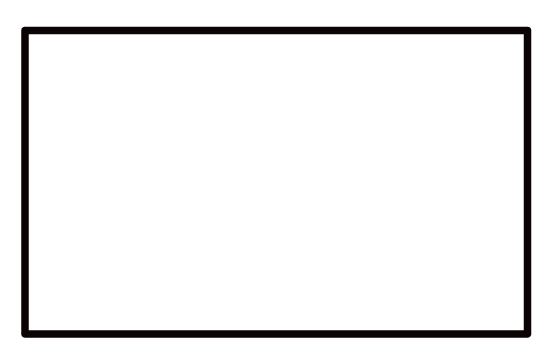
在“测量金属丝的电阻率”的实验中，实验小组的同学测量一段阻值约为6 Ω、粗细均匀金属丝的电阻率．
用螺旋测微器分别在三个不同的位置测量金属丝的直径，某次示数如图甲所示，该次测量值为 mm．
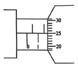
实验小组的同学采用图乙所示的电路图，用伏安法测金属丝的电阻Rx．图丙是测量Rx的实验器材实物图，图中已连接了部分导线．请根据图乙的电路图，补充完成图丙中实物间的连线 ．
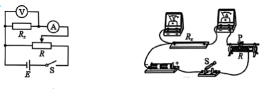
依据完成的实物连接图，为了保护电路，闭合开关之前滑动变阻器滑片P应置于 （选填“左”或“右”）端．
伏安法测电阻率的实验原理及操作流程。
物理兴趣小组为了测量金属丝的电阻率，除了待测金属丝、刻度尺、螺旋测微器、开关和导线之外，还备有下列器材：已知待测电阻约为30Ω．
A.电压表V1（量程0~3V，内阻约3kΩ）
B.电压表V2（量程0~15V，内阻约15kΩ）C.电流表A1（量程0~100mA，内阻约5Ω）
D.电流表A2（量程0~0.6A，内阻约0.1Ω）E.多用电表
F.滑动变阻器R1（阻值0~10Ω，额定电流2A）G.滑动变阻器R2（阻值0~2kΩ，额定电流0.5A）
H.电源E（输出电压约4V，内阻可忽略）

取一段均匀的电阻丝接在木板的两接线柱上，用刻度尺测量两接线柱间金属丝的长度L=50.0cm，用螺旋测微器测量金属丝的直径示数如图a所示，直径d= mm．
其中电压表应选 ，电流表应选 ，滑动变阻器应选 ．（填器材前字母）
小组成员准备测量多组数据，描绘U-I图像，根据图像求出电阻，请画出所需实验电路图 ，并完善图c所示的电路图：
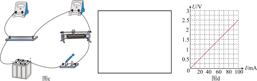
改变滑动变阻器滑片的位置，绘出U-I图像如图d所示，金属丝的电阻R= Ω，若通过测量获得，金属丝的长度为l、直径为d，电阻值为Rx，由此可计算得出金属丝的电阻率ρ= ．（用字母表示）
1、螺旋测微器的精确值为0.01mm，由图可知金属丝的直径为 ;
2、电源输出电压约4V，则电压表应选择 A ；由于待测金属丝电阻约为30Ω，根据电压表量程，最大电流约为，故电流表应选择 C ；为了调节方便，使电表示数变化明显，滑动变阻器应选阻值较小的 F ．
3、由于待测金属丝电阻约为,电压表的内阻约 ，电流表的内阻约，电压表内阻远远大于待测金属丝阻值，则电流表应采用 外接法 ，为了便于调节电路并能多次测量，且能有效地控制不超出电压表的量程，使待测金属丝两端电压是能从零开始调节，滑动变阻器选择 分压式 接法，则实验电路图如图所示
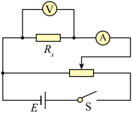
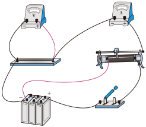
4、U-I图像可得 。
5、根据电阻定律，可得 。
根据电路中各个元器件的参数，合理选择电压电流表以及电路连接方法。
在“测量金属丝的电阻率”实验中，选用金属丝的电阻约为5 Ω．
实验中能提供的器材有开关、若干导线及下列器材：
电压表（量程0 ~ 3 V，内阻约3 kΩ）
电流表（量程0 ~ 0.6 A，内阻约0.1 Ω）
滑动变阻器（最大阻值5 Ω，额定电流2 A）
电源（电动势为3 V，内阻不计）
某同学为了使金属丝两端电压调节范围更大，并使测量结果尽可能准确，应选用下图所示的 电路进行实验．
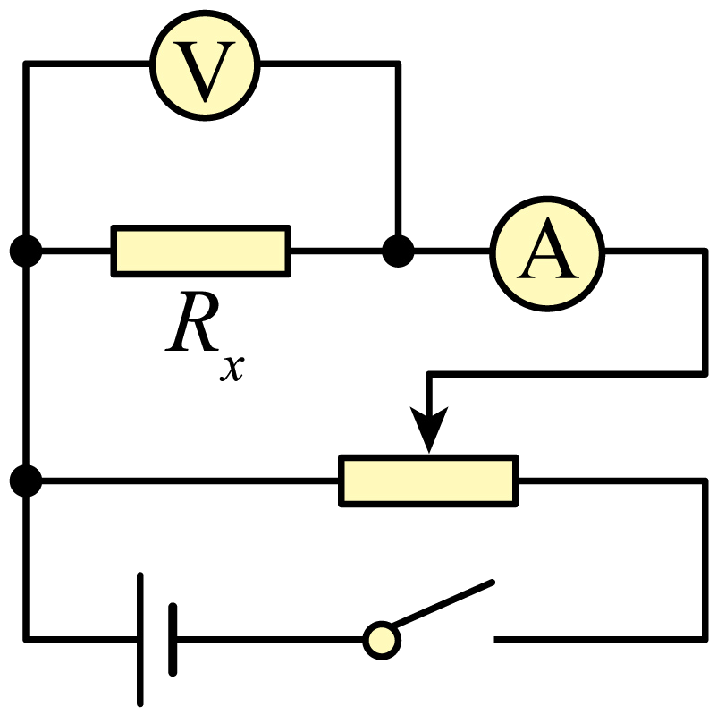
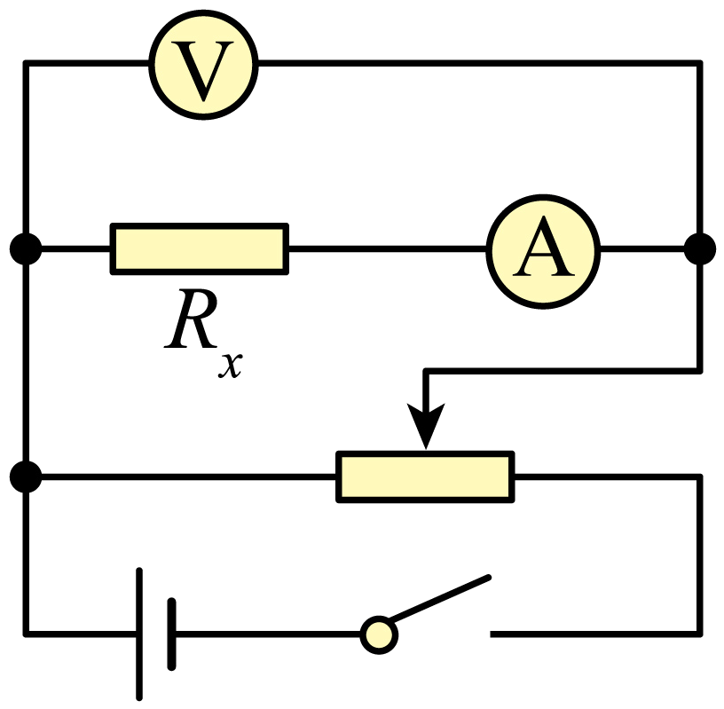
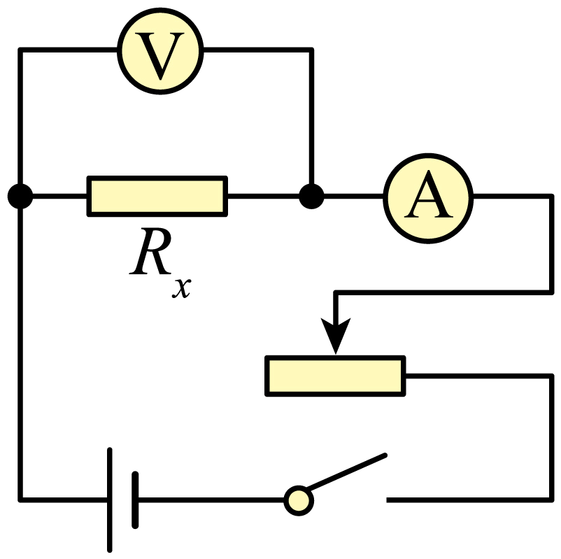
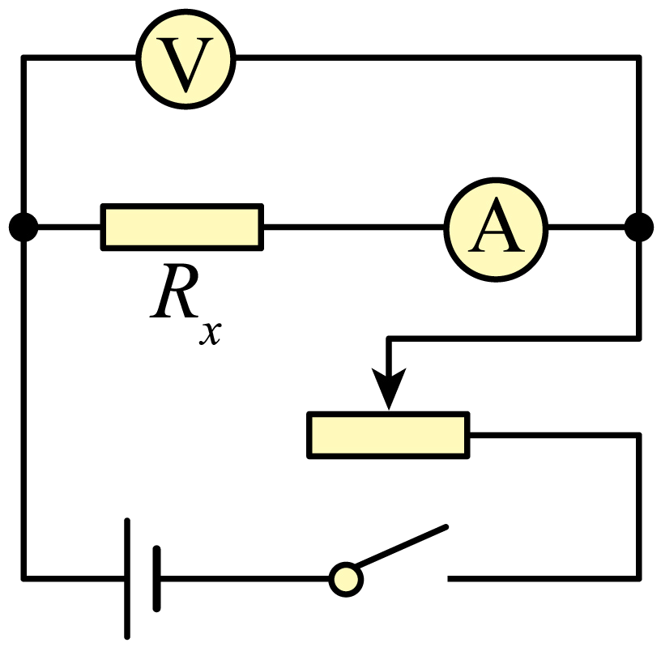
该同学建立U−I坐标系，如图所示．图中已标出了与测量数据对应的六个坐标点，请描绘出U−I图线 ，并由图线数据计算出金属丝的电阻为 \Omega （保留两位有效数字）．设被测金属丝电阻为Rx，金属丝直径为d，接入电路部分的长度为l，则该金属丝电阻率的表达式是\rho = （用题目给出的物理量符号表示）．
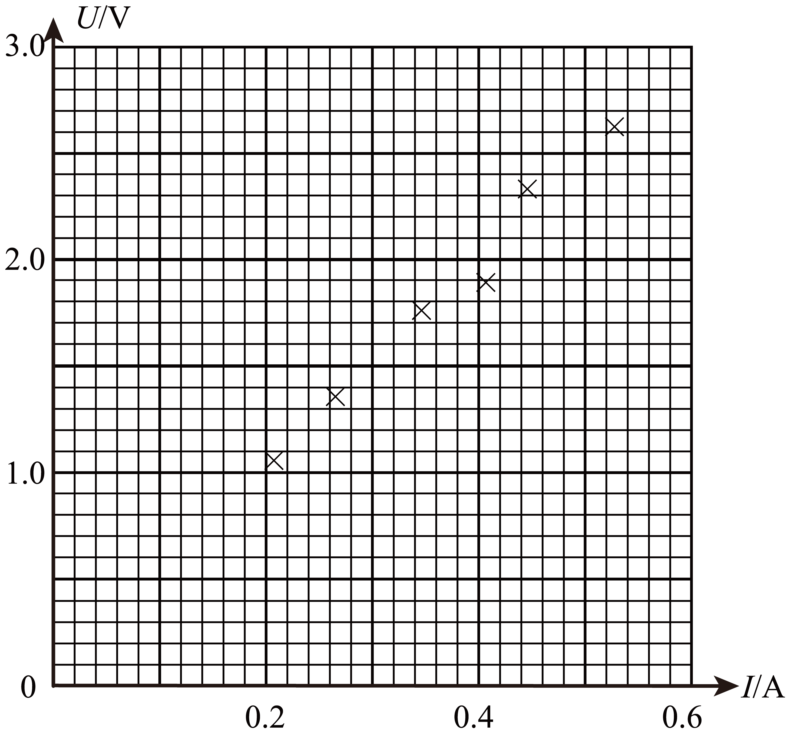
在“测定金属的电阻率”的实验中，某同学选择一根粗细均匀、阻值约为的电阻丝进行了测量．
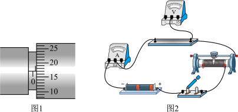
在测量了电阻丝的长度之后，该同学用螺旋测微器测量电阻丝的直径，测量结果如图1所示为 ．
然后补充完成如图2中实物间的连线，答案画在答题纸上．
现有电源（电动势E为，内阻不计）、开关和导线若干，以及下列器材：
A．滑动变阻器（，额定电流）
B．滑动变阻器（，额定电流）
为减小误差，且电压调节范围尽量大，滑动变阻器应选 （选填器材前的字母）．
电导率是电阻率的倒数，用字母表示，常用单位是西门子/厘米（），即．电导率是反映水质的一项重要指标．资料显示某种饮用水的电导率约为．将该饮用水灌入一个绝缘性能良好、高约、容积约的薄壁塑料瓶（如图3所示），瓶的两端用两个略小于瓶底面积的固定金属圆片电极密封．请通过计算说明用图中的实验器材能否较为精确的测量该饮用水的电导率．若能，请写出需要测量的物理量及对应的测量方法；若不能，请提出一种改进措施 ．
某学习小组用电阻约为
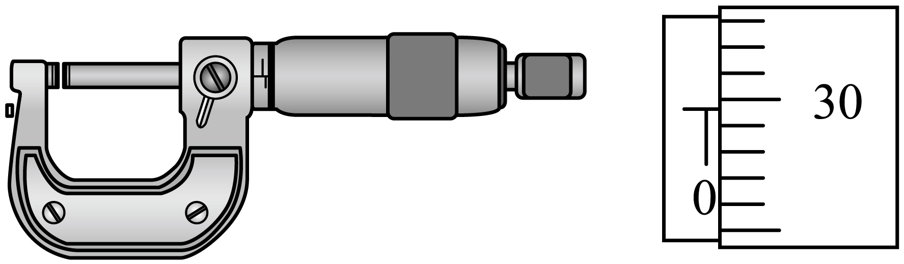
如图所示，用螺旋测微器测量金属丝直径，则金属丝直径
除电源（电动势3.0V，内阻不计）、电压表（量程0~3V，内阻约
为使金属丝电阻的测量结果尽量准确，且金属丝两端的电压从零开始变化，以下实验电路符合要求的是 ；
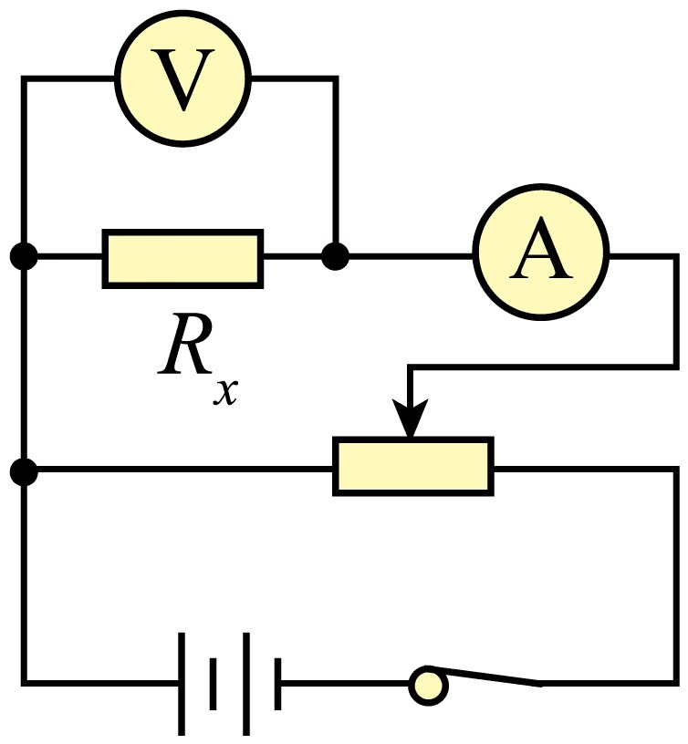
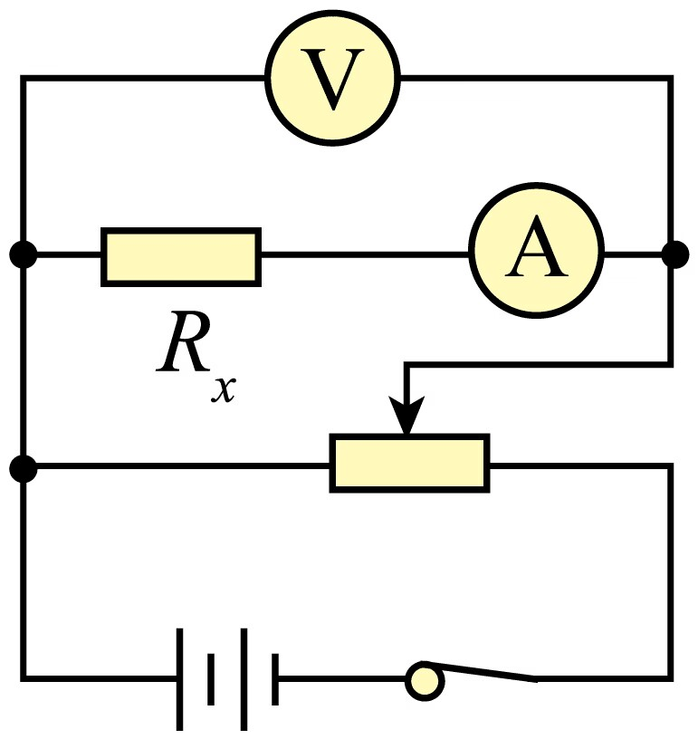
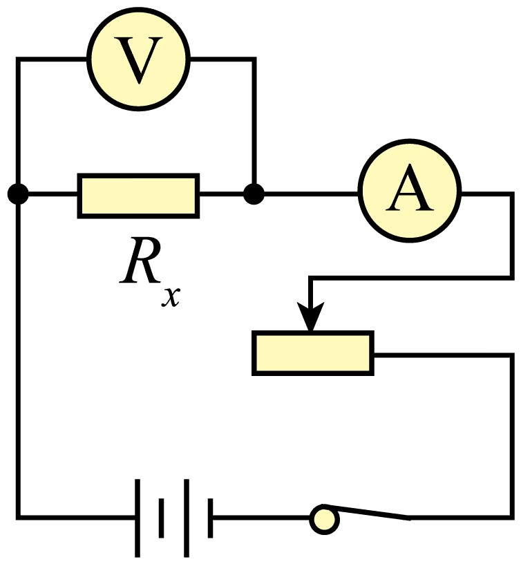
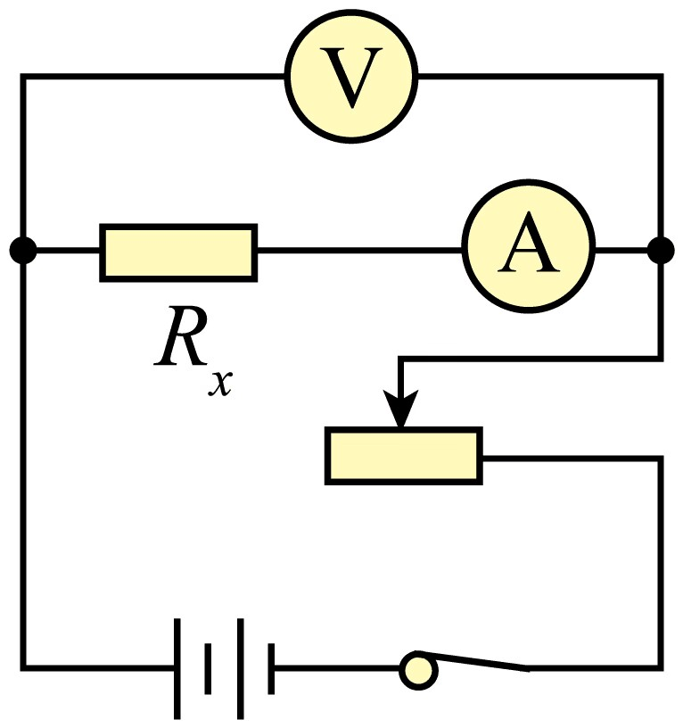
实验中改变滑动变阻器滑片的位置，读取多组电压、电流值，描绘出的U-I图线，若图线的斜率为k，金属线的长度为l，直径为D，则金属丝电阻率的表达式为 ；（用k、l、D表示）
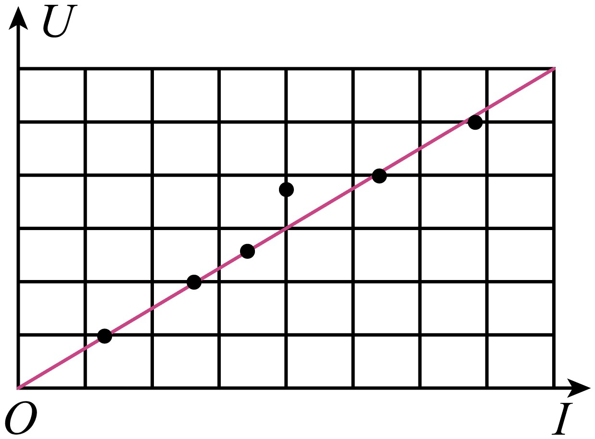
任何实验测量都存在误差，本实验所用测量仪器均已校准，下列关于误差的说法中正确的选项是 ．
用电流传感器测量通过定值电阻的电流，电流随时间变化的图线如图甲所示．将定值电阻替换为小灯泡，电流随时间变化的图线如图乙所示．请分析说明小灯泡的电流为什么随时间呈现这样的变化 ．
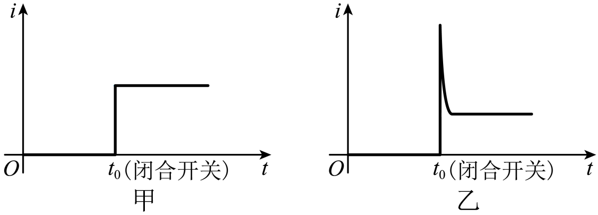
视频预览